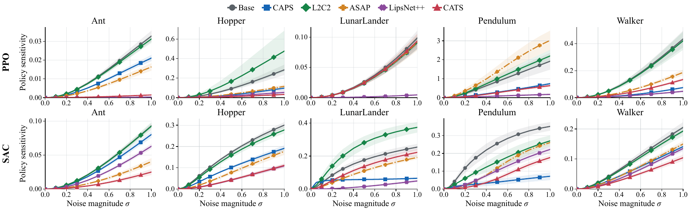

Action oscillation in deep RL
Deep RL policies can produce nonsmooth action oscillations that hinder deployment on physical robots. Reducing these oscillations calls for two policy properties: temporal smoothness, low policy sensitivity to state inputs received over time, and spatial smoothness, low policy sensitivity to small input changes caused by observation noise.
Why broad spatial constraints can hurt performance
Although policy inputs are temporally related, many existing methods characterize smoothness over the state space. Such spatial regularization imposes broad, direct constraints that may suppress important action changes.
Spatial regularization
CAPS spatial-only
Revisiting temporal regularization
Temporal regularization
Induced spatial smoothness
Spatial regularization at matched smoothness
Spatial smoothness without a spatial penalty
(Lower sensitivity indicates greater spatial smoothness.)


Under observation noise
Smooth control after sim-to-real transfer
Main view
Additional view
We compare PPO and CATS on real-world Reach, where CATS retains smooth control without an explicit spatial penalty. We recorded an additional camera view to show PPO's small but persistent oscillations more clearly.
BibTeX
@misc{ahn2026cats,
title = {Revisiting Temporal Regularization for Smooth Control in Deep Reinforcement Learning},
author = {SungJae Ahn and Jeong Woon Lee and Kyoleen Kwak and Hyoseok Hwang},
year = {2026},
eprint = {2610.07910},
archivePrefix = {arXiv},
primaryClass = {cs.LG},
url = {https://arxiv.org/abs/2610.07910}
}